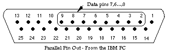

| parallelput | parallel port procedure |
| Syntax | parallelput ( p : int )
| ||||||||||||||||||||||||||||||||
| Description | The parallelput procedure is used on a PC to set the values on the data pins on the parallel port. This port corresponds to the MS-DOS device "LPT1". This procedure can be used to control robots and peripherals.
| ||||||||||||||||||||||||||||||||
| Example | This program sets data bit 0, data bit 1 and so on to data bit 7.
for i : 0 .. 7
parallelput (2 ** i) %Set data bit i on the parallel port
put "Data bit ", i, " or Pin ", i + 2, "has just been set"
end for
| ||||||||||||||||||||||||||||||||
| Details | The parallelput procedure is used to set the eight data bits on the PC's parallel port. These data bits 0 - 7 correspond to pins 2 - 9 on the parallel port.

For example, the command parallelput (97) sets data bits 0, 5 and 6 high (97 = 1 + 32 + 64) and sets the other data pins low. Because there are only 8 data pins in the parallel port, the value passed to parallelput must be from 0 to 255. The parallelput procedure is not meant for sending a stream of characters to the parallel port (for example, if you want to send the string "Hello" to the printer). If you want to do this, open the file "LPT1" using the open statement and put to the file.
| ||||||||||||||||||||||||||||||||
| See also | the parallelget function, which is used to read the values of pins on the parallel port.
|